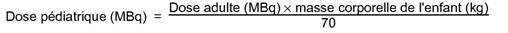
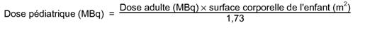

RÉSUMÉ DES CARACTÉRISTIQUES DU PRODUIT
ANSM - Mis à jour le : 21/04/2010
Albumine humaine iodée (125I) CIS bio international, solution injectable. [Réf: SERALB-125]
2. COMPOSITION QUALITATIVE ET QUANTITATIVE
Albumine humaine iodée (125I) ......................................................................... 320 kBq à la date de calibration
Pour 1,7 mL.
Ce produit contient un conservateur antimicrobien.
L'iode-125 (numéro atomique: 53; nombre de masse: 125) présente une période de 60 jours. Il décroît en tellure stable (125Te) par capture électronique (100 %). Seulement 6,7 % de la désintégration de l'iode-125 conduisent à un état énergétique instable et à l'émission de rayonnements gamma dont l'énergie moyenne est de 35,5 keV. L'iode-125 est donc un faible émetteur de rayonnements gamma dont la détection est cependant rendue efficace par les raies X du tellure-125 produit par décroissance (Kalpha = 27 keV; Kbêta = 31 keV).
Excipient: Alcool benzylique.
Pour la liste complète des excipients, voir rubrique 6.1.
Solution injectable.
Solution limpide, incolore à jaunâtre de pH compris entre 5,0 et 9,0.
4.1. Indications thérapeutiques
Ce médicament est à usage diagnostique uniquement.
Mesure du volume plasmatique.
Détermination du taux de renouvellement de l'albumine plasmatique.
4.2. Posologie et mode d'administration
Chez l'adulte de masse corporelle de 50 kg à 70 kg, l'activité moyenne recommandée est de:
|
Mesure du volume plasmatique: |
0,2 MBq |
|
Taux de renouvellement de l'albumine plasmatique: |
1 MBq |
Pour la mesure du volume plasmatique, des échantillons sanguins sont prélevés entre la 10ème et à la 120ème minute après l'injection du produit. Les concentrations radioactives mesurées sur ces échantillons permettent de déterminer la concentration radioactive initiale.
L'utilisation de plus fortes activités, en tomoscintigraphie par exemple, se justifie dans certaines circonstances cliniques.
Chez l'enfant, l'activité à injecter est une fraction de celle recommandée chez l'adulte, fraction obtenue par application de la formule suivante:

La masse corporelle est le meilleur paramètre de conversion à prendre encompte en vue de la détermination de l'activité à administrer; néanmoins, dans certains cas il peut être judicieux de faire appel à la surface corporelle:

Afin de prévenir une éventuelle accumulation d'iode radioactif libre au niveau de la thyroïde résultant du catabolisme de l'albumine humaine marquée, il convient d'administrer de l'iodure de potassium (140 mg/jour) 24 heures avant l'injection du produit et pendant une semaine après celle-ci, ou encore du perchlorate de potassium (200 mg/jour) 1 heure avant l'injection du produit et pendant 7 à 10 jours après celle-ci.
En raison de la présence d'alcool benzylique, ce médicament est contre-indiqué chez les prématurés et les nouveau-nés à terme.
4.4. Mises en garde spéciales et précautions d'emploi
Le risque de transmission d'agents infectieux, y compris ceux dont la nature est encore inconnue, ne peut pas être définitivement exclu lorsque sont administrés des médicaments préparés à partir du sang ou de plasma humain.
Ce risque est cependant limité par:
· de stricts contrôles effectués lors de la sélection des dons par un entretien médical avec les donneurs et la réalisation de tests de dépistage sur chaque don, en particulier pour trois virus pathogènes majeurs, VIH, VHC, VHB;
· la recherche de matériel génomique du virus de l'hépatite C (VHC) sur les pools de plasma.
· le procédé d'extraction/purification qui inclut des étapes d'élimination et/ou d'inactivation virale, dont la capacité a été validée pour le VIH, le VHC, le VHB, à l'aide de virus modèles.
L'efficacité de l'élimination et/ou de l'inactivation virale reste cependant limitée vis à vis de certains virus non enveloppés particulièrement résistants.
Aucun cas de contamination virale associé à l'administration d'albumine plasmatique humaine pasteurisée n'a été rapporté.
En cas d'administration récente de produits radioactifs, il convient de déterminer l'activité résiduelle dans le compartiment sanguin et d'augmenter la dose administrée afin d'obtenir une activité quatre fois plus élevée que l'activité résiduelle observée.
Ce produit ne doit pas être administré par voie intrathécale.
Les produits radiopharmaceutiques ne doivent être réceptionnés, utilisés et administrés que par des personnes autorisées dans les services agréés. Leur réception, leur stockage, leur utilisation, leur transfert et leur élimination sont soumis aux réglementations et aux autorisations appropriées des autorités compétentes.
Les produits radiopharmaceutiques doivent être préparés de manière à satisfaire à la fois aux normes de radioprotection et de qualité pharmaceutique. Les précautions appropriées d'asepsie doivent être prises afin de satisfaire aux exigences des Bonnes Pratiques de Fabrication pharmaceutique.
Ce médicament contient 0,016 mL d'alcool benzylique par flacon. Il peut provoquer des réactions toxiques et des réactions de type anaphylactoïde chez les nourrissons et les enfants jusqu'à 3 ans.
4.5. Interactions avec d'autres médicaments et autres formes d'interactions
Aucune connue à ce jour.
Lorsqu'il est nécessaire d'administrer des produits radiopharmaceutiques à la femme en âge de procréer, toute éventualité de grossesse doit être écartée. Toute femme n'ayant pas eu ses règles doit être considérée comme enceinte jusqu'à preuve du contraire. Dans le doute, il est important que l'exposition aux radiations soit réduite au minimum pour obtenir les informations cliniques souhaitées. D'autres techniques n'impliquant pas l'emploi de radiations ionisantes peuvent être envisagées si elles n'altèrent pas la qualité diagnostique.
Les examens utilisant des radionucléides chez la femme enceinte entraînent également l'irradiation du fœtus. Il ne faut réaliser au cours de la grossesse que les seules investigations absolument nécessaires lorsque le bénéfice probable dépasse les risques encourus par la mère et le fœtus.
L'administration d'activités de 0,2 MBq et de 1 MBq d'albumine humaine iodée (125I) entraîne respectivement des doses de radiation absorbées de 3,7 × 10-2 et de 2,0 × 10-1 mGy au niveau de l'utérus.
Avant d'administrer un produit radiopharmaceutique à une femme en cours d'allaitement, il faut envisager si on peut repousser l'examen jusqu'à la fin de l'allaitement ou s'assurer dans le cas contraire que le radiopharmaceutique choisi est le plus approprié compte tenu de l'éventuel passage de la radioactivité dans le lait. Si l'administration en est indispensable, l'allaitement doit être arrêté.
L'allaitement peut être repris lorsque l'activité dans le lait maternel ne risque pas d'entraîner une dose de radiation pour l'enfant supérieure à 1 mSv.
4.7. Effets sur l'aptitude à conduire des véhicules et à utiliser des machines
Aucun connu à ce jour.
Des cas de fièvre et de réactions allergiques ont été signalés à la suite de l'administration de l'albumine humaine radioiodée. Les réactions indésirables comprennent la fièvre, des sensations vertigineuses, des nausées, des vomissements, une tachycardie, une hypotension et de l'urticaire.
Pour tout patient, l'exposition aux radiations ionisantes doit être justifiée par le bénéfice diagnostique attendu. La radioactivité administrée doit être telle que l'irradiation qui en découle soit aussi faible que possible, en gardant à l'esprit la nécessité d'obtenir le diagnostic requis.
L'exposition aux radiations ionisantes peut potentiellement induire des cancers ou développer des déficiences héréditaires. L'expérience montre que, pour ce qui est des examens diagnostiques en médecine nucléaire, la fréquence de ces effets indésirables est très faible en raison des faibles activités utilisées.
Pour la plupart des examens de médecine nucléaire, la dose efficace (E) est inférieure à 20 mSv.
En cas d'administration d'une activité excessive d'albumine humaine marquée à l'iode-125, il n'y a pas de mesure immédiatement applicable pour diminuer l'exposition des tissus, car le produit marqué est peu éliminé par l'urine ou par les fecès.
5. PROPRIETES PHARMACOLOGIQUES
5.1. Propriétés pharmacodynamiques
Classe pharmacothérapeutique: PRODUIT RADIOPHARMACEUTIQUE A USAGE DIAGNOSTIQUE
Code ATC: V09GB02
L'albumine humaine marquée à l'iode-125, aux activités recommandées et aux concentrations chimiques utilisées pour les examens diagnostiques, n'exerce pas d'effet pharmacodynamique.
5.2. Propriétés pharmacocinétiques
L'étude de la répartition de l'activité indique que l'albumine humaine radioiodée se distribue à partir du compartiment plasmatique selon une loi qui peut être représentée par la somme de trois composantes exponentielles correspondant à des demi-vies respectives de 6,8 heures, 1,29 jours et 19,4 jours. L'albumine humaine radioactive étant métabolisée de façon progressive, il existe une certaine quantité d'iode-125 libre, susceptible d'être fixée par la thyroïde. L'inhibition de la fixation thyroïdienne favorise l'élimination urinaire de la radioactivité.
5.3. Données de sécurité préclinique
Aucune étude de toxicologie de l'albumine humaine radioiodée n'a été effectuée.
L'albumine humaine est un constituant physiologique du sang humain et le marquage n'entraîne aucune modification du comportement biologique in vivo lorsque chaque molécule d'albumine ne comporte qu'un atome d'iode.
Albumine humaine, alcool benzylique, chlorure de sodium, eau pour préparations injectables.
En l'absence d'études de compatibilité, ce médicament ne doit pas être mélangé avec d'autres médicaments.
49 jours après la date de fabrication. La date de péremption est indiquée sur l'étiquette du flacon et sur le conditionnement extérieur.
6.4. Précautions particulières de conservation
A conserver au réfrigérateur (entre 2°C et 8°C) dans l'emballage extérieur d'origine.
Le stockage doit être effectué conformément aux réglementations nationales relatives aux produits radioactifs.
6.5. Nature et contenu de l'emballage extérieur
5 mL de solution en flacon (verre incolore, de type I) muni d'un bouchon (caoutchouc) et d'une capsule (aluminium).
Boîte de 4 flacons unidoses contenant 320 kBq à la date de calibration (1,7 mL).
6.6. Précautions particulières d’élimination et de manipulation
Les précautions appropriées d'asepsie et de radioprotection doivent être respectées.
Avant l'utilisation, le conditionnement, le pH, l'activité et le spectre gamma doivent être vérifiés.
Le flacon ne doit jamais être ouvert. Après désinfection du bouchon, la solution doit être prélevée aseptiquement à travers le bouchon à l'aide d'une seringue et d'une aiguille stériles à usage unique.
L'administration de produits radiopharmaceutiques présente des risques pour l'entourage du patient en raison de l'irradiation externe ou de la contamination par les urines, les vomissements, les expectorations. Par conséquent, il faut prendre des mesures de protection contre les radiations conformément aux réglementations nationales.
Tout produit non utilisé doit être éliminé conformément à la réglementation en vigueur.
Les étiquettes détachables prévues à l'article R. 5121-184 permettent d'assurer la traçabilité du médicament jusqu'à l'administration aux patients.
Une planche de 16 étiquettes détachables est prévue dans la boîte d'Albumine humaine iodée (125I) CIS bio international (SERALB-125).
Un jeu de 3 étiquettes doit correspondre à un patient.
Un bordereau de délivrance doit être élaboré par la personne en charge de la délivrance.
Ce bordereau est défini à l'article R.5121-187 et R.5121-188 du Code de la Santé Publique et doit porter les mentions suivantes:
|
a. |
Le nom du prescripteur et le service auquel il appartient; |
|
b. |
Les nom, prénom(s) et date de naissance du patient auquel le médicament est destiné; |
|
c. |
Les informations figurant sur l'étiquette détachable du conditionnement extérieur; |
|
d. |
La date de délivrance; |
|
e. |
Les quantités délivrées. |
La personne en charge de la délivrance doit coller sur le bordereau de délivrance l'une des trois étiquettes détachables prévues par patient et contenues dans la boîte d'Albumine humaine iodée (125I) CIS bio international (SERALB-125).
Au sein du service, la personne administrant le médicament doit compléter le bordereau en y portant les informations suivantes:
|
a. |
Les nom, prénom(s) et date de naissance du patient; |
|
b. |
La date d'administration; |
|
c. |
L'activité administrée. |
La personne administrant le médicament doit détacher les deux étiquettes restantes:
· l'une sera apposée sur le bordereau de délivrance;
· l'autre sera apposée dans le dossier patient.
7. TITULAIRE DE L’AUTORISATION DE MISE SUR LE MARCHE
CIS BIO INTERNATIONAL
RN 306 - SACLAY
BP 32
91192 GIF-SUR-YVETTE CEDEX
8. NUMERO(S) D’AUTORISATION DE MISE SUR LE MARCHE
· 564 445-2 ou 34009 564 445 2 6: 1,7 mL de solution en flacon (verre). Boîte de 4 flacons monodoses.
9. DATE DE PREMIERE AUTORISATION/DE RENOUVELLEMENT DE L’AUTORISATION
[à compléter par le titulaire]
10. DATE DE MISE A JOUR DU TEXTE
[à compléter par le titulaire]
Selon les publications n° 53 et 60 de la CIPR (Commission Internationale pour la Protection Radiologique), les doses absorbées par les patients après inhibition de la captation thyroïdienne sont les suivantes:
|
Organe |
DOSES ABSORBEES PAR UNITE D'ACTIVITE ADMINISTREE (mGy/MBq) |
||||
|
Adulte |
15 ans |
10 ans |
5 ans |
1 an |
|
|
Cœur |
6,9 x 10-1 |
8,0 x 10-1 |
1,3 |
2,0 |
3,6 |
|
Rate |
5,9 x 10-1 |
6,9 x 10-1 |
1,1 |
1,8 |
3,6 |
|
Poumons |
5,7 x 10-1 |
7,2 x 10-1 |
1,2 |
1,9 |
3,8 |
|
Moelle osseuse |
3,7 x 10-1 |
4,6 x 10-1 |
7,8 x 10-1 |
1,3 |
2,6 |
|
Reins |
3,3 x 10-1 |
4,1 x 10-1 |
6,8 x 10-1 |
1,1 |
2,2 |
|
Surfaces osseuses |
3,2 x 10-1 |
4,2 x 10-1 |
7,3 x 10-1 |
1,2 |
2,6 |
|
Surrénales |
3,0 x 10-1 |
3,9 x 10-1 |
6,7 x 10-1 |
1,1 |
2,3 |
|
Foie |
3,0 x 10-1 |
3,5 x 10-1 |
6,0 x 10-1 |
9,8 x 10-1 |
1,9 |
|
Thyroïde |
2,6 x 10-1 |
3,3 x 10-1 |
5,6 x 10-1 |
9,3 x 10-1 |
1,8 |
|
Pancréas |
2,3 x 10-1 |
2,7 x 10-1 |
4,6 x 10-1 |
7,8 x 10-1 |
1,6 |
|
Estomac |
2,1 x 10-1 |
2,6 x 10-1 |
4,0 x 10-1 |
7,0 x 10-1 |
1,4 |
|
Intestin grêle |
2,1 x 10-1 |
2,5 x 10-1 |
4,2 x 10-1 |
6,9 x 10-1 |
1,4 |
|
Colon supérieur |
2,1 x 10-1 |
2,5 x 10-1 |
4,2 x 10-1 |
6,7 x 10-1 |
1,4 |
|
Colon inférieur |
2,0 x 10-1 |
2,4 x 10-1 |
3,8 x 10-1 |
6,3 x 10-1 |
1,3 |
|
Vessie |
2,0 x 10-1 |
2,5 x 10-1 |
3,8 x 10-1 |
6,5 x 10-1 |
1,4 |
|
Seins |
2,0 x 10-1 |
2,1 x 10-1 |
3,2 x 10-1 |
5,4 x 10-1 |
1,1 |
|
Ovaires |
2,0 x 10-1 |
2,5 x 10-1 |
4,2 x 10-1 |
6,9 x 10-1 |
1,4 |
|
Utérus |
2,0 x 10-1 |
2,5 x 10-1 |
4,2 x 10-1 |
6,8 x 10-1 |
1,4 |
|
Autres tissus |
1,9 x 10-1 |
2,3 x 10-1 |
3,7 x 10-1 |
6,0 x 10-1 |
1,2 |
|
Testicules |
1,6 x 10-1 |
2,1 x 10-1 |
3,3 x 10-1 |
5,4 x 10-1 |
1,1 |
|
Dose efficace (mSv/MBq) |
3,0 x 10-1 |
3,6 x 10-1 |
6,0 x 10-1 |
9,8 x 10-1 |
2,0 |
Pour ce produit, la dose efficace (E) après l'administration d'une activité de 1 MBq est 3,0 x 10-1 mSv (chez un individu de 70 kg) après inhibition de la captation thyroïdienne.
12. INSTRUCTIONS POUR LA PREPARATION DES RADIOPHARMACEUTIQUES
L'élimination des déchets radioactifs doit se faire en accord avec les réglementations nationales et internationales.
Liste I
Médicament réservé à l'usage hospitalier.
Les produits radiopharmaceutiques ne doivent être utilisés que par des personnes qualifiées. Ils ne peuvent être délivrés qu'à des praticiens ayant obtenu l'autorisation spéciale prévue à l'article R 1333-24 du Code de la Santé Publique.